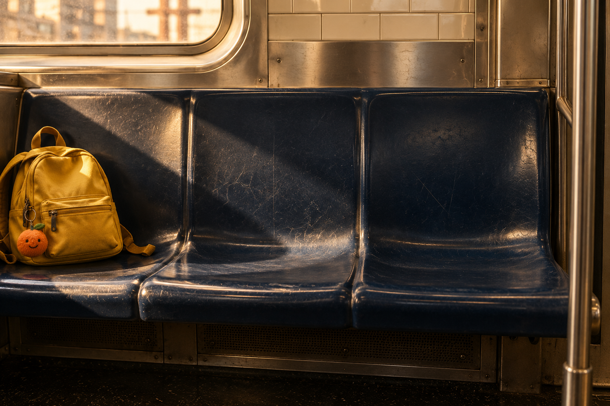
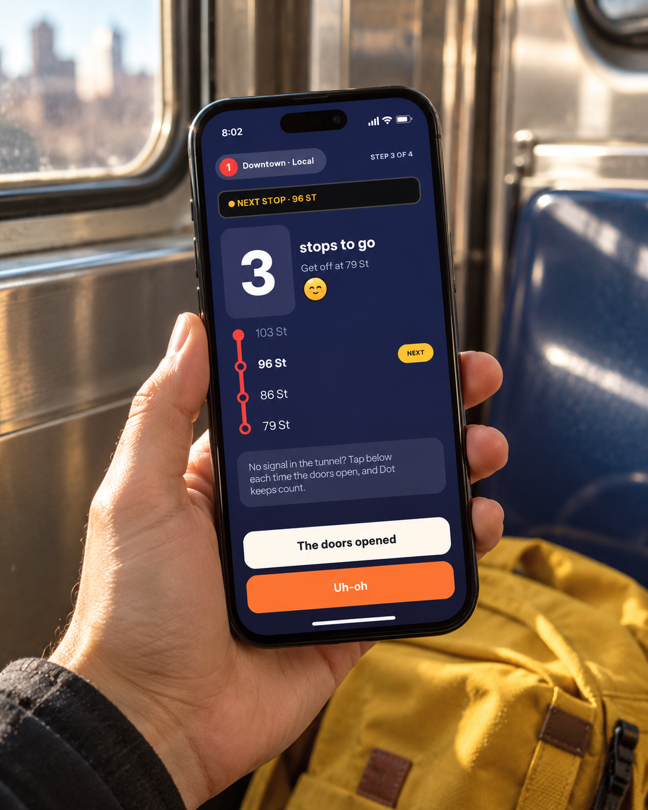
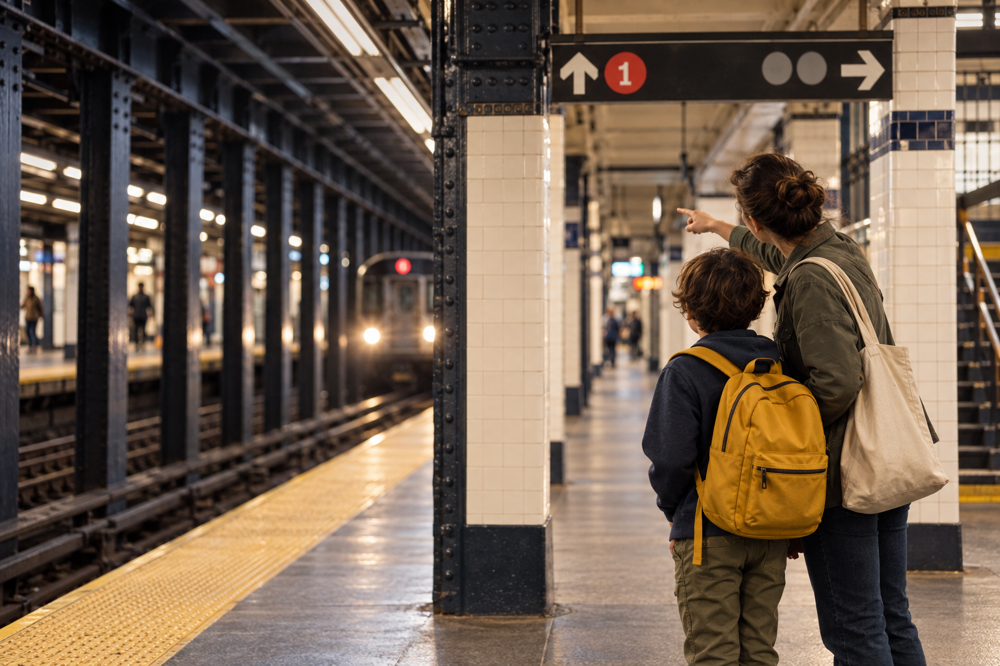
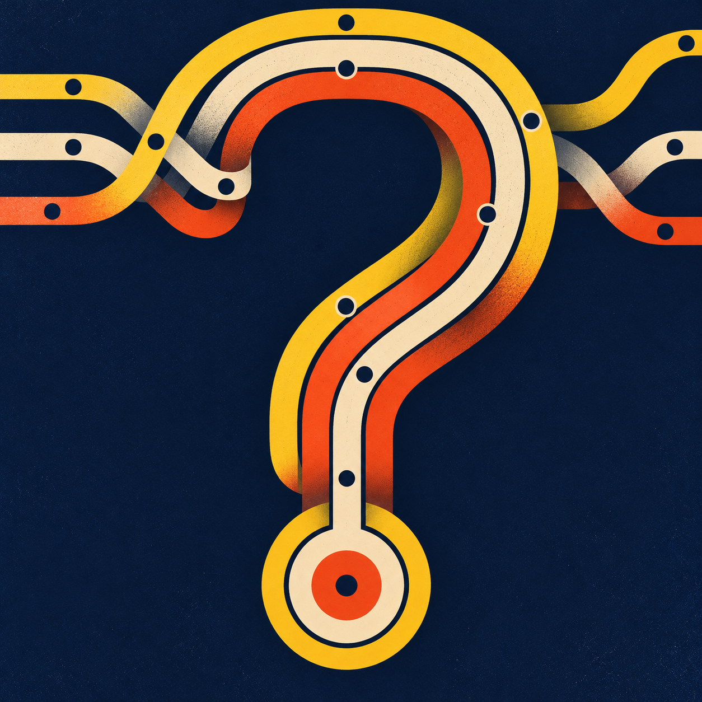
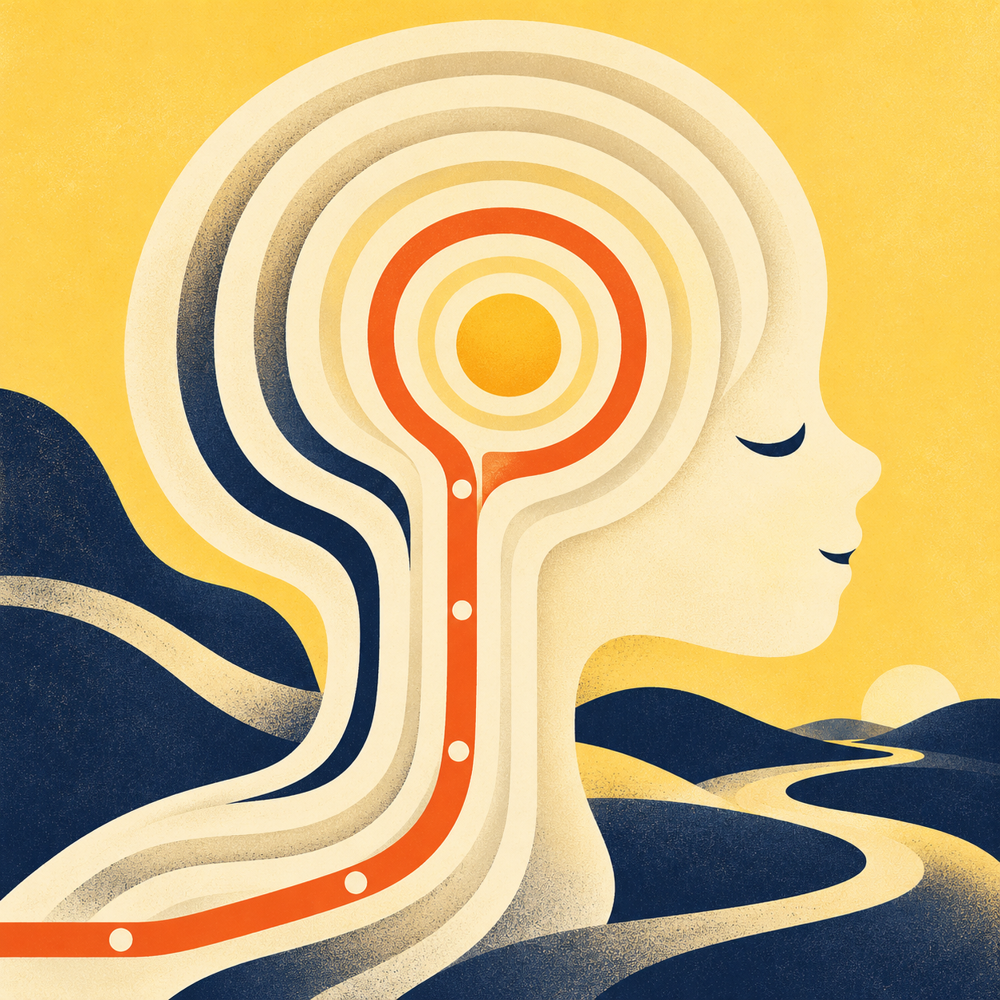
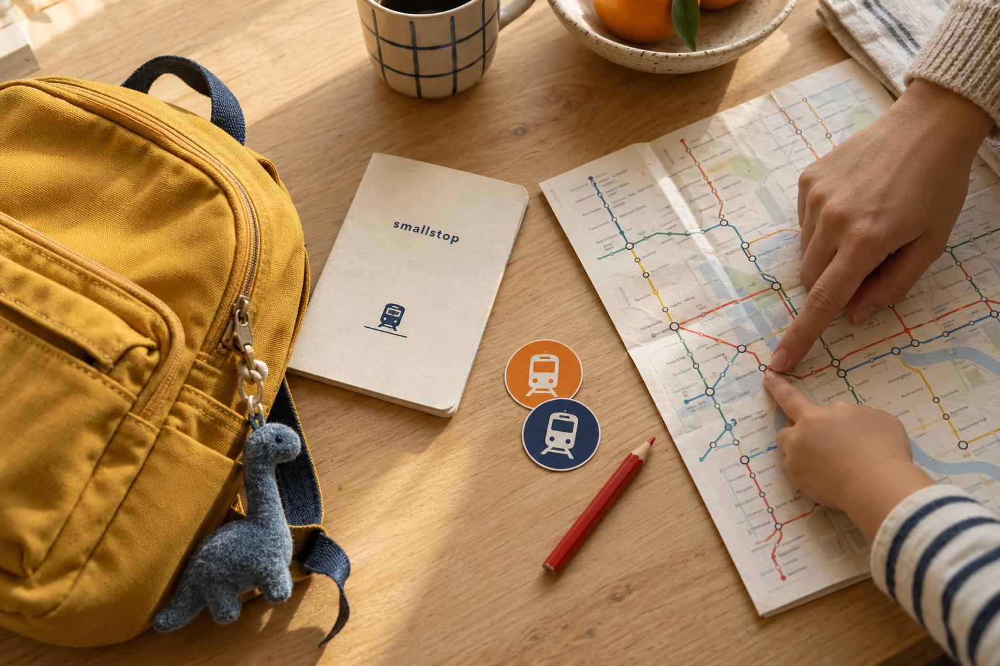

Responsibilities
Define the experience, organize the rider and caregiver flows, develop the interface and visual identity, and communicate key interactions through prototypes and motion.
A little confidence for a very big city.
A familiar subway route still asks a child to make unfamiliar decisions.
Connected practice, ride guidance, and reassurance in one companion, with a caregiver involved from the start.
Build the experience around one clear next step, then make room for help.
Mobile product concept · 2026
Developed from my Ride Ready wireframes
[Figma, HTML / CSS, JavaScript, Python, FFmpeg]

A subway companion for growing independence.
Smallstop began as Ride Ready: a mobile concept for children learning the New York subway with a caregiver. The challenge is to turn a familiar trip into a repeatable learning experience—from recognizing a platform sign to knowing when to ask for help.
Define the experience, organize the rider and caregiver flows, develop the interface and visual identity, and communicate key interactions through prototypes and motion.
Problem framing · Information architecture · User flows · UI design · Visual storytelling · Interaction design · Motion prototyping
Figma for the source wireframes. HTML, CSS and JavaScript for the interactive prototype. Python and FFmpeg for feature films. AI image generation for concept photography.
A new name and identity, connected product flows, an interactive demo, looping microinteraction films, and a visual case study.

One familiar ride at a time.

A route is more than a line on a map. It asks a child to interpret signs, track progress, and respond when something feels unexpected. Smallstop focuses on those moments, with a caregiver helping set the route and the pace.
Working hypotheses from the wireframes, to validate with children and caregivers.

Unfamiliar signs and a busy platform can make a simple route feel complicated. Practice builds recognition; a stop counter keeps the next action in focus.

An unexpected stop can unsettle a new rider. Reassurance stays close, while caregivers help decide when to practice and when to try a little more independence.
PrepareHow might we help children recognize the right cues before they reach the platform?
ReassureHow might we make the next action clear when the journey feels unfamiliar?
GrowHow might we support independence while keeping caregivers involved?

Smallstop connects practice at home with guidance on the train. A child learns the signs, follows a familiar route, and has a clear place to turn when something feels unexpected.
Caregivers help choose the route and decide when to practice together. Progress comes from familiarity, one ride at a time.
Four parts of the same journey, from preparation to a little more confidence.
Try route decisions before reaching the platform.
Keep a familiar route and a clear stop count in view.
Reach reassurance and return to the ride.
Collect station stamps as familiar journeys add up.
A concept-level assessment of what Smallstop can offer and what still needs to be resolved.
One familiar route connects practice, guidance, and reassurance. A consistent companion keeps the experience recognizable.
Manual stop counting can drift. The concept has not been validated with children or against real transit conditions.
Explore caregiver-led rehearsal, accessible sign recognition, and a shared vocabulary for asking for help.
Service changes, unreliable connectivity, and misplaced trust in a concept could undermine guidance. Real-world release needs operational validation.
A focused review of published product guidance informed this comparison. Smallstop’s distinction is a proposed learning experience for children and caregivers, not a claim that other tools lack every related feature.
Journey guidance
Relevant steps at the right time.
Design cue: reveal the next action.Step-by-step travel
Progress through the trip with GO.
Design cue: make progress visible.Trip planning
A clear plan for getting there.
Design cue: keep the route legible.Learning a familiar route
Practice, ride guidance, and reassurance.
Proposed focus: confidence through repetition.Bring sign practice, caregiver decisions, and in-ride reassurance into one learning experience. This is a concept direction, not evidence that competitors lack these features.
Maya’s first familiar ride. Illustrative scenario statements, not participant quotations.
I want to try the next step myself.
Is this the right platform?
Does this sign match what we practiced?
What happens if I miss my stop?
Learning rider
Matches signs, counts stops, and checks with a caregiver.
Looks for a familiar landmark.
Proud to lead a small part of the trip.
Unsure when the train pauses or the plan changes.
Too many signs, unfamiliar names, and instructions that assume experience.
Let me try.
Help me know what comes next.
A recognizable next step, permission to ask for help, and confidence built through practice.
An anticipated emotional journey, to validate in supervised testing. The curve is illustrative, not measured data.
Choose the school route with a caregiver.
A shared route makes the goal concrete.Try a platform-sign question.
Explain the answer and allow another try.Recognize the route and next stop.
Bring one instruction into focus.Open help when something feels unfamiliar.
Offer calm guidance and a return path.Recognize the destination and reflect together.
Connect the stamp to what was learned.Four provisional profiles for the concept. Names, ages, and situations are illustrative; they are not research participants or validated findings.
The learning rider
Travels to school with a caregiver and recognizes familiar stations. Is beginning to take a more active role in the journey.
Wants to choose the right platform, recognize the stop, and feel trusted to handle small parts of the trip.
Mixing up directions, missing a stop, or not knowing what to do when a train pauses between stations.
Lots of signs at once, unfamiliar station names, and instructions that assume the rider already knows the system.
Make the next step recognizable, give useful feedback, and keep help easy to find.
The caregiver
Coordinates school travel around a busy routine. Practices familiar trips with Maya and decides when to introduce more independence.
Wants Maya to understand the journey, explain the next step, and feel comfortable asking for help.
A route changing, messages not getting through underground, and confidence growing faster than practical readiness.
It can be difficult to judge readiness or rehearse unexpected moments without making the journey feel intimidating.
Support route approval, a practice-first choice, and clear expectations about offline guidance.
The returning rider
Knows the school route and usually travels with a sibling. Uses familiar landmarks to keep track.
Wants to take responsibility for the journey without repeating lessons already understood.
A skipped stop or changed platform can make a familiar trip feel unfamiliar again.
Instructions that restart from the beginning, unclear recovery steps, and rewards that feel too young.
Keep routine guidance brief, make changes explicit, and offer a clear way to ask a trusted adult for help.
The shared caregiver
Helps with school pickups on some days and coordinates the route with the child’s parent.
Wants a clear shared plan and to know what the child has practiced before setting off.
Small text, unfamiliar controls, and assuming that a message has arrived underground.
Plans spread across conversations and no simple distinction between saved guidance and live information.
Use legible labels, an explicit practice plan, and visible message status. Explore shared access with caregiver consent.
A big part of the business plan was to ensure costs were covered without making it a burden on users. The proposed model combines voluntary add-ons and affiliate partnerships, reducing reliance on direct user payments while supporting basic app functionality and scalability.
The idea Keep the everyday journey free. Let optional extras and caregiver-facing partnerships help fund the service.
Proposed model: partner interest, operating costs, and willingness to pay still need validation. Affiliate offers would be clearly disclosed and kept separate from children’s route guidance.
My Ride, Practice, and Passport anchor the navigation. Help stays within reach, with a direct return to the current trip.
Saved route
Start → Stops → Arrival
Help ↔ Return to rideRoute Quest
Signs → Choice → Feedback
Repeat and build familiarityStation stamps
Journeys → Achievements
See progress over timeCaregiver flow: route request → approve / practice first / not this time
A qualitative planning exercise: balance learning value with implementation effort.
Sign practice · Saved route · Always-visible help
Offline recovery · Caregiver permissions · Service-change guidance
Station stamps · A small arrival celebration
Public leaderboards · Social feeds · Citywide challenges
A schematic reconstruction of the core flow, showing hierarchy before visual styling.
Choose a route with a caregiver.
Recognize one sign at a time.
One route. One next action.
Return to the ride or ask for help.
Proposed study: recruit children and caregivers with different levels of transit familiarity. No sessions or results are claimed here.
Interview caregiver–child pairs about a familiar route, how they practice, and how responsibilities change.
In a supervised simulation, ask participants to match signs, track a stop, and explain the next step aloud.
Simulate a paused train and unavailable connectivity. Check whether help and message status are understood.
Recruit across reading confidence, device familiarity, and accessibility needs. Obtain caregiver consent and child assent.
A framework for recording future sessions. Each question connects an observation to a possible design change.
| Question | Evidence to collect | Decision it informs |
|---|---|---|
| Can they read the sign? | Choice, explanation, hesitation, and help needed. | Wording, sign scale, and practice feedback. |
| Can they recover? | Help discovery and successful return to the current trip. | Help placement and saved ride state. |
| Do caregivers understand readiness? | How they explain approve versus practice first. | Approval language and shared preparation. |
| Does the reward support learning? | Whether riders can explain what the stamp represents. | Keep rewards tied to familiarity, not speed. |
Decisions explored in the prototype, ready to test with real users.
A prominent stop count and a short route strip bring the current action forward.
Practice explains the choice and allows another attempt without losing progress.
The help flow preserves ride progress and provides a clear way back.
Caregivers can choose a shared rehearsal instead of only yes or no.
Reading a platform sign, choosing the right direction, noticing your stop: a familiar trip is a sequence of small decisions. The design breaks that sequence into things a child can learn, practice, and recognize.
Before the ride
Practice the exact signs and decisions from a route chosen with a grown-up.
On the way
Show the next step and the stops remaining, without a whole network competing for attention.
When plans change
Keep a consistent help button and plain-language guidance close at hand.
One familiar companion, from the first practice question to the arrival stamp. Tap feedback, changing stop counts, and a quiet breathing cue make the next action clear.
Route Quest turns real decisions into small practice moments. Station-style signs build recognition; feedback explains the choice. The goal is readiness, with a shared practice ride before going solo.
A large counter and a short route strip keep the important information in focus. Underground, a manual “doors opened” button lets a rider follow their saved route without relying on a live location signal.
A stopped train can feel unfamiliar. The help flow lowers the visual noise, offers a breathing cue, and brings the next action forward. Saved guidance stays available; messages to a grown-up would depend on connectivity.
New routes begin with a conversation. A grown-up can approve a request, choose a practice ride together, or say “not this time.” Readiness sets the pace.
A patient companion for learning the city, with a caregiver setting the pace.
Warm, clear, and encouraging. Dot offers reassurance without pretending to replace a trusted adult.
Short directions and specific feedback. Explain the next action without pressure or competition.
Transit ink, ticket yellow, readable type, and recognizable signs. Color reinforces words and symbols.
Practice together. Follow a familiar route. Know where to turn when the trip feels unfamiliar.
Transit lettering, route colors, ticket edges, and passport stamps create a familiar visual language. Warm paper and generous spacing balance the bold signs and confident type.
Clear directions. A friendly voice. Room to breathe.
Color supports the words. It never replaces them.
Start a ride and tap when the doors open. Try a practice question, or take a moment with Dot. This interactive adaptation explores the Figma flow in Smallstop’s new visual identity.
Concept demo · no live transit data or messages
Go on, tap around. Dot’s here.
The strongest design direction is clarity before rewards. The next step is to test whether that clarity holds up across different riders and unexpected moments.
Compare practice choices with a supervised sign-reading task. Note confusion, explanations needed, and successful recognition.
Use a simulated stopped-train scenario. Observe whether the next action is understood and the ride state remains clear.
Walk through route approval with caregivers. Check expectations about practice, connectivity, and what the app can actually do.
Smallstop brings learning, riding, and reassurance into one familiar system. The design makes space for confidence to grow through repetition, with a grown-up setting the route and the pace.
This is a design concept developed from the Ride Ready wireframes. The next step is to test sign recognition, reading load, and recovery flows with children and caregivers, then validate the offline and transit-data behavior before a real-world pilot.